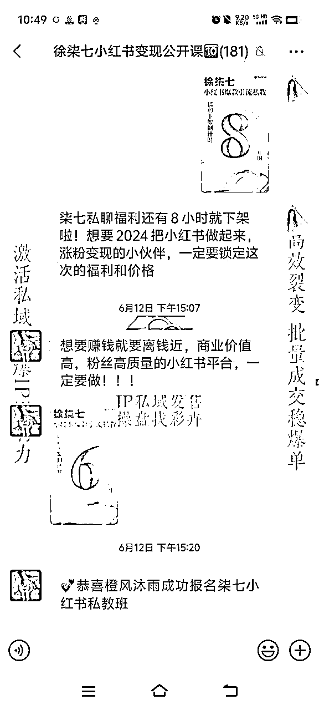

来源：https://pqu5cbjcjoy.feishu.cn/docx/NsmTddUE4oMS0HxApSLcAdpLn4d
各位生财的圈友大家好，我是彩卉，首先感谢生财这个优秀的平台，能让我把自己的经验分享出来，同时还要感谢我的老师理白老师和靠谱老师帮助我做的定位，以及一路的支持和托举，帮我手把手修改稿子，指导发售，也感谢芷蓝姐的帮助和托举以及答疑解惑，感谢小鹿帮忙指点分享稿。
从去年10月份转型做私域群发售操盘，直到现在，做这个业务已经半年了，目前累计做了50+场私域社群发售，累计业绩400W+，今天我就把我做发售的底层逻辑和全部流程尽数送给各位圈友。
相信很多老板都在做知识付费或者是卖产品，大家都产品不同，但是一个最重要的点还是渠道，不管卖什么，渠道都是最重要的，目前卖产品的渠道包括公众号、朋友圈、直播、社群。
群发售的好处就是，可以将这些路径全部结合起来，在短期内迅速占领用户心智，先用社群公开课的方法吸引用户，短期说清楚自己的产品特点，同时通过直播，社群分享跟用户拉近距离，提升转化率。
群发售可以说是每个ip必备技能之一，不管如何，每年做1-2场群发售，可以极大地激活你的私域用户，不管你是卖实体产品，还是卖虚拟产品，发售技术都可以帮助你很好的完成业绩。
我的分享目录如下：
一、什么是群发售
（1）什么是群发售
（2）为什么要做群发售
二、群发售流程一览
阶段一：预售+筹备阶段
阶段二：预热+发售阶段
阶段三：追售+复盘阶段
三、预售+筹备阶段
step1：确认好自己本次发售的产品（2-3个梯度）
step2：筹备公开课的课程标题和课程大纲
step3：预售
step4：准备各种各样的福利
step5：多多社交，布局人脉，跟更多小伙伴链接，让大家一起托举你
四、预热+发售阶段
step：人员分工
ster2：建群预热
step3：正式发售
step4：私信谈单成交
五、追售+复盘阶段
话不多说，我开始啦~
群发售是一场用”公开课“吸引用户的活动，这场活动能够将自己的产品集中成交给自己的用户，形成批量爆单。
简单理解，就是，我有一个产品，用一场公开课活动，一次性卖给我的用户。
（1）
对于知识付费行业来说，发售可以帮助我们做到成交和交付分离，用一次成交活动，搞定一年的业绩，活动完成后，剩下的时间安心交付，更专注地带领学员出成绩（但并不是说发售期间不交付，交付期间不卖货，知识减少这个比例）。
对于其他实体产品来说，一年4个季度，可以规律地做这样的促销活动，比如，各种门店卖会员卡，各种减脂套餐集中去卖，都会给自己一整年的业绩增色不少。
（2）批量成交，能够形成一场影响力事件，快速在圈子里起势造势，提升自己的势能和影响力，有的老板一次性发售就可以成交几十万甚至上百万的业绩，相比一年GMV100w，7天GMV100w显然更有利于形成影响力事件。
（3）在发售的过程中，我们会用相应的方法进行流量裂变，使得发售结束后，产生流量裂变，做到用户增长。
（4）就是发售的业绩往往会很漂亮，有钱赚，一场发售活动3-5天，很可能拿到3w-100w的业绩。
（5）快速激活私域用户，因为我们会用相关的私域运营方式，高频率触达用户，同时能够让用户在发售过程中快速了解您和您的产品，举个例子，如果你朋友圈有一个新用户，想让他从0-1了解您的产品，知道您的产品有什么优势，可能需要一个月，但是一场发售，集中5天给用户讲解产品和优势，用户很快就清楚了，大大缩短你成交用户的时间。
（6）有利于打造学员和客户案例，比如一次性收30人，肯定有能够出成绩的，但是要是一次收2.3个，那么出成绩的可能性或许会降低，因为可能摊上执行力不OK的学员和客户，所以大力出奇迹，有了大数据，后面招生也会比较轻松和丝滑。
那说了这么多，发售到底怎么做呢？接下来用总-分的结构，来给大家说说，到底怎么做一场发售活动。
首先，我们一共把发售分为3个部分：前、中、后。
分别是：预售+筹备阶段、预热+发售阶段、追售+复盘阶段
为了这场大事件，我们要明确几个点
（1）这场大事件，我们要卖什么产品？这个产品的卖点是什么？说清楚卖点，你的产品才更加好卖，才有的放矢。比如我要卖生财有术社群，那么卖点就是：可以学到很多好的课程，小白也很合适，想学习的赛道都有......
（2）为了卖你的产品，你要准备一场社群公开课，你将准备什么样的主题和大纲？
比如我要卖生财有术，那么我就做一个这样的课程大纲：
开营仪式
互联网变现指南
变现案例1—6
航海介绍
结营仪式
（3）筹备相关的物料
（4）在整个私域板块做宣发预售（注意，不是直接卖，就是预售），提前关内容，比如，我是做社群的，我就做一些关于“我在社群上取得了什么成绩”“我是怎么通过社群变现的”“我的学员都因为跟我学习社群，取得了什么成绩”......
举例子：
（5）布局人脉，一场发售想要做的好，一定是多方支持的，需要有人在社群阶段帮你运营、帮你互动，也需要有其他kol\koc来帮助你拉新裂变，所以如果你找不到相关的人来帮忙，一定要 提前多跟别人链接，在大事件的时候相互托举和支持。
正式进入到社群发售的阶段了，正式发售的阶段，其实是两个部分组成：预热+发售。
预热：建立好公开课群，并且往公开课群里面拉用户（通过朋友圈、私信、公众号、视频号等等触达）。
发售：开始在拉好的公开课群内，按照筹备阶段的安排，给大家上公开课，并在公开课的过程中说清楚自己的产品，把产品卖出去。
整场活动在这个时间就接近尾声了，但是我们要经历一下追售谈单的过程，比如咨询一下用户，对公开课的感觉怎么样，要不要加入生财有术，并且开一场复盘会，复盘会复盘一下我们发售业绩做的很不错的原因，比如：产品利他，老师负责，专业等等，其实也相当于变相再介绍一下卖点，二次成交我们的用户。
到这，我就把整个发售的三部曲给大家说清楚了，相信大家都在心中对发售有了一个框架，接下来，我们来拆解每一个部分的动作，学习一下到底怎样准备一场发售。
前面总览过，我们发售的前期，是预售+筹备阶段，那我们到底该筹备什么、准备什么呢？
产品我们应该选择2-3个梯度，比如，社群运营私教年度：9800，社群运营标准课899，社群运营陪伴群199，这里注意，产品可以多，但是一定要是类似的，比如小红书标准课和小红书私教，但是一定不要是小红书课和公众号课，这就没法介绍了，也没有侧重点。
此外，一定要有主产品，也就是说，发售的时候要有一个是主要拿出来卖的，其余都是附加产品。
因为不同梯度的产品可以帮助我们承接不同需求、不同付费能力的用户。
那如何把产品筹备好，并呈现出来呢？那就不得不提到我们的产品海报这一块了。
基本上是包括以下几个部分：
课程标题
讲师介绍
课程体系
交付权益
附加福利
重点来给大家说说课程体系和交付权益的部分，因为其他的大家很好理解，但是这两个部分经常会有同学弄混。
那什么叫做课程体系呢？
如果把产品比作一个学校的话，课程体系就等于语数外、理化生这几门课程。
举个有趣的小例子
如果此时我是用户，来咨询你：“校长，我的孩子来您这能学到什么呀？”
您说：“我们会从语数外、理化生6个方面给孩子全程辅导，帮助孩子考大学。”
回到我们的产品上
用户问你“来到你这我能学到什么呀？”
您说：“我从A\B\C\D\E5个方面来帮助你全方位提升xx技巧”
举个例子，如果我卖私域运营私教，我会设置：定位、产品、流量、转化4大体系，来通过这4大体系，全方位提升用户私域运营的能力。
那什么叫交付权益呢？
还是学校这个例子，校长告诉你，你来到我们学校，我们学校会给学生提供一对一咨询，学校的各种器械全可以使用，学校的实验室免费使用，可以随时跟老师约电话给孩子做课后咨询等等。
这就是这个学校给到的权益。
回到我们课程的产品权益，常见的几种权益是这样写：一对一咨询不限次数、渠道佣金、平台背书共享等等......
大家把这两个部分打磨好，产品基本就完善了90%，其余的细节部分，就是大家都专业功底了。
下面是我帮一个美业的客户搭建的海报，总共3Part，大家可以更直观地观察
则应该包含以下几个部分
讲师介绍
适合人群
课程大纲
价格
比如，家庭教育规划咨询
则应该说清楚
讲师介绍
解决问题
购买权益
海报应该包含以下
产品介绍
产品功效
购买权益/福利
适合人群
产品这一块说完了，接下来就是筹备公开课了
既然我们是社群发售，那社群发售就要上社群公开课，上公开课就要有公开课主题和每日分享的课程大纲（注意，是公开课的课程大纲，不是产品的课程大纲）
那公开课的课程大纲如何筹备呢？
首先，产品已经出来了，大家就一定知道，公开课是围绕什么开展的，比如，我的产品是私域运营课，那么我的公开课就是围绕私域运营，如果我的产品是小红书变现，那我的公开课就是围绕小红书变现......
其次，有了主题就要想标题，公开课的标题有什么规律呢？
通常，公开课的标题分为两个部分：主标题+副标题
主标题：露出人设，经历，跟用户拉近距离
比如：《99年无资源无背景的女研究生，如何通过做社群赚到第一桶金》
副标题：简单明了，直接告诉大家这是什么公开课
比如：《IP私域社群变现公开课》
第三，有了标题，就要设置公开课的课程框架
那课程框架要怎么设置呢？
答：围绕你可以从哪些方面帮助用户来设置
一个非常常用的模板如下：
DAY1：IP的个人经历，拉进跟用户的距离，比如《99年无资源无背景，靠社群赚到读研学费，请所有人都要去做社群》
DAY2：你所处的赛道的卖点，不管是搞钱，还是医美，还是教育，比如《人人可做，10种社群变现模式大揭秘》
DAY3：学员分享+干货输出1《5大维度，打造最适合你的社群定位》
DAY4：学员分享+干货输出2《......》
DAY5：学员分享+干货输出3《......》
（注：所有的标题都是我现场编的，只是举例子，其实压根没这个课，大家不用深究）
举例如下：
大家可以看出来，3-5天我都加了一场学员分享，这个部分，主要是为了让你的用户看到案例，看到你帮别人拿结果，但是，如果你的产品是新产品，就一定记得提前内测，关于如何内测产品，主要有以下几个步骤和方法。
用发售当内测：新品直接发售，首发低价，就当是内测了，这样也很容易测试一批客户反馈
慢点测，求稳，测试方法如下：
首先根据自己的产品基础，可以先调研一下自己身边的一些朋友和目标用户，是不是对这个感兴趣。
如果不感兴趣，对什么方向感兴趣
如果感兴趣，期待交付一些什么内容，用什么形式等等
你可以用调查问卷的方式，也可以用点对点私聊的方式
如果你调研的用户，多数都感兴趣，就可以按照这个安排去内测了；如果用户多数都不感兴趣，说明你要对产品的内容和权益做一个调整
调研这一关通过之后，你就可以在身边小范围内测邀请了，可以跟自己的用户/朋友说明情况，也可以朋友圈宣发一次，那内测有什么要点呢
1、设置名额/时间限制：只招募x位用户做体验/只在x号之前招募用户做体验
2、成员要经过筛选，尽量选择能够有执行力的小伙伴参与内测，这样更容易出你想要的结果，也能测试出你的交付到底有没有用，如果选择的成员没有执行力，那么内测结果可能不具备参考性。
3、内测要有相关的福利：降低价格/提供超值福利等
这里大家应该都能看懂，邀请成员内测给出一定的额外奖励，提高大家合作的意愿，双向奔赴。
这样，你的内测就开始了，也意味着，你的产品初步投入实战了。
内测招募结束以后，就开始按照自己前面的安排，做正式的交付了，交付过程中注意：
1、要注意收集用户的反馈，比如私下做回访，这里可以自行设置回访的问题，可以按需自由回访，也可以制作固定的表格收集反馈。
2、要留意自己是否需要调整，反馈是一种信息搜集，而是否调整要看主理人的决策。
总之，一边交付，一边把自己的交付流程和方式查缺补漏，最后在正式大规模宣传之前，把产品调试好
但其实总体来说，内测这一步基本不需要，因为大家出的产品，基本上都是市面上已经有的产品了，除非是一些小众的蓝海赛道，没有参照物可以参考，那是一定需要内测的。
其次是干货输出，也就是说，这次公开课，你是真的带着大家拿成绩的，不是就说一些心灵鸡汤，之前我经常举个例子“公开课就像你的试吃装蛋糕，好吃大家才会进店买，不好吃大家就不去了。”所以，是骡子是马都要拉出来溜溜，把自己的干货，真家伙事，拿出来给大家掌掌眼，真诚就是必杀技。
所以3-5天的干货输出是非常有必要的。
再说说公开课的标题怎么写，大家一定要明确3种元素：方法，结果，案例，这3个元素可以任意组合
比如：99年无资源无背景，靠社群赚到读研学费，请所有人都要去做社群
就用了:案例+方法
案例：99年无资源无背景的女大学生，靠社群赚到读研学费
方法：社群
同理，其他的章节标题也可以这样写。
至此，大家就确定好了我们发售过程中最重要的2个部分：产品和公开课安排
什么叫预售，很好理解，就是字面意思，类似我们在双十一的时候，去天猫付50块钱锁定产品。
那我们发售也用这样的玩法。
主要的作用是：
1、提前将 产品拍出去，降低发售阶段的业绩压力，比如业绩目标是20w，预售定出去10w，压力就会大大降低
2、正式发售的时候业绩好看，还可以引起羊群效应，因为整个发售的过程就是包含预售的，所以这部分业绩也算在发售里，到时候会安排运营官发客户成交喜报。
比如：“恭喜xxx成功加入xxx私教班，未来一起创富，过生美好生活！”
这个时候，其他客户看到了就会觉得产品很火爆，自然想要多了解一些。
那怎么玩呢？主要是围绕2个维度
1、内容维度
2、平台维度
1、内容维度，你可以从不同的角度，给自己的产品做铺垫
比如：你想发售的是小红书私教课
那你可以围绕：
a：自己在小红书上取得的成绩
b：指导过自己的学员通过小红书变现
c：做小红书的日常
d：接商单变现等等
e：一定一定要透露自己接下来的大事件，比如：“最近也在筹备自己的小红书大事件了，想要了解的小伙伴可以私信彩卉哦~"这样的朋友圈/评论区来收预售定金。
2、平台维度，你可以通过不同的平台多维度展示铺垫，比如
公众号
各种星球
社群
视频号直播
朋友圈
都可以把内容维度的内容重新发一次。
只有通过内容，才能不断吸引用户的注意力，并且再内容中露出自己的产品，给产品做好铺垫，后续就能多渠道成交更多用户。
大家可以把这张图存一下，为什么要准备福利呢？
有一句话叫做，营销就是社交，你想要别人做什么动作，就要给出相应的好处，不要想着用户会“自来水”，就算人家自来水，我们该给的礼物也一样不能少。
所以：
你想让用户进群，就准备好进群福利；
想让用户填写问卷，就准备好问卷福利；
想让用户帮你拉新裂变，就准备好裂变福利；
想让用户下定金，就准备好定金福利：
想让用户下单，就准备好下单福利。
至于福利怎样设置，大家根据自己手头有点东西送就可以了，注意，福利尽可能是没有编辑成本的，比如：电子书、标准课等等，也就是说，你送1个人和送100人没什么区别，不会产生多余的交付。
有福利还有一个很重要的作用 ，就是，福利是你跟用户链接的桥梁，因为你给用户发福利的时候，你就可以打开用户的话匣子，问问用户的相关需求，针对性成交。
比如：“你好呀，看了你在群里写的复盘，我来给你发复盘福利啦，留意到你有一个xx问题，你现在还有疑问吗？我来给您系统解答一下。”
在社群发售的过程中，我们经常采用的一个打法，叫联盟打法
也就是不仅彩卉作为公开课的主要负责人，卖自己的产品，我的老师靠谱老师，理白老师，芷蓝老师，以及其他朋友，也会来帮助我进行拉新，或者成交，这就是联盟。
比如直播的时候邀请靠谱老师连麦，靠谱老师在连麦的时候跟大家推荐我，并且带着自己的下单福利。
比如拉新的时候邀请理白老师帮我一起拉新。
比如社群分享的时候邀请芷蓝姐做一场分享。
所以，做发售其实一直都不是一个人的事，你会成功，不是因为你想成功，而是因为所有人都希望你成功。
如果有机会，有能力，多去链接、社交、线下前面，透露自己的大事件，咨询朋友们是否愿意来帮忙，是非常有必要的一件事。
至此，我们所有的铺垫部分都已经完成，按部就班地把预售+筹备阶段做好，剩下的就是等待发售时刻的到来。台上一分钟，台下十年功，我们做群发售就是，台上五七天，台下大半年。
先胜后战，所有的动作都不是脑袋一热，都是早有筹划。
度过了第一阶段，就来到了我们很重要的预热+发售阶段，这个阶段，我们就要开始真正上战场了。
首先我们来盘一下，我们一场发售，需要多少人，大致都干些啥？
主理人：拉新、分享、承接流量、成交
运营官1-2人：拉新
分销成员：若干
预热阶段，我们只干3件事
1、往公开课群里拉人
这个动作谁做呢？就是所有参与拉新的人都要做，包括主理人，分销团队，kol......人多，种子用户就多，最后转化的量也就会多。
拉新方式包括但不限于：朋友圈、公众号、私信
2、不停地发公众号和朋友圈，多触达用户
3、每达成一个阶段性进群小目标的时候，发喜报，报喜造势，引起羊群效应，让更多人闻讯而来。
喜报和倒计时如下：
一波接着一波，浪潮式拉新
4、建群要求
（1）标题：简单明了，说清楚是什么公开课，比如【彩卉丨社群变现公开课1】
（2）群公告，一共分为3个部分
欢迎语+介绍讲师+公开课安排+公开课福利+公开课规则
（3）欢迎语：欢迎+引导裂变+引导添加老师
这样预热期间的任务就全部结束了，下面我们来看正式发售
方向一：大的规划
方向二：每日细节点
方向一：大的规划
通常，我们会把公开课的上课方式分为两种，一种是社群图文分享，就像我现在这样，一种是直播发售，也就是通过直播给用户分享，那这两种分享模式，在发售的节点上有什么不同呢？
图文分享，建议第三天开始透露产品
直播分享，第一天就开始透露产品
为什么呢？因为在面对面的时候，大家会第一眼见到你，就觉得亲切或者靠谱，这样做推销的时候，用户也会因为看到你的人，从而觉得你很真诚，更容易把产品卖出去。
但是图文分享的时候，大家没办法看见你人，只能通过文字体会你的分享，这个时候如果太急切，会给用户一种“这个人怎么一上来就卖东西”的不良体验。
所以直播和图文，在什么时候切入硬广，一定要牢记于心。
第三天第四天的时候，就要多多宣传并且主要促单了，这个时候我们的私域板块也要跟着调整，如果说预热阶段，我们主要是为了拉大家进群，那么发售阶段，我们主要就是为了成交转化。
最后一天开展倒计时，起到一个比较紧迫的感觉，每在社群发一张倒计时海报，可以搭配一段认知提高或者促进产品成交的话术，这样又可以多角度植入。
方向二：每日细节安排
首先就是每天早上，关于当日安排的预告，告诉社群里的小伙伴你要分享什么，并且说明白，为什么分享这个内容，引导大家晚上来听分享。
举例子：
其次就是到分享正式开始之前，要有一个热场话术，就像主持人在表演开始之前给到的一个介绍，这个主要做用是，不要让大家感觉分享猝不及防突然开始了，而是要丝滑引入，让大家记得被照顾到了。
举例子：
第三就到了正式开始发售了，这个时候，我们就该社群分享就社群分享，该直播就直播，内容是我们在筹备期准备好的内容，提前写好的稿子和直播大纲。
等到老师们讲完之后，我们需要收尾谢幕，也就是要有收尾话术和收尾阶段。
主要的作用是
（1）引导大家提问/复盘/下单
（2）给用户一个好的观感，让大家有头有尾地结束，而不是忽然就停了，给大家放在那里，一脸懵逼。
（3）在收尾话术中有引导用户下单的话术，做销售动作
举例：
这个时候就会有小伙伴陆陆续续下单了，这个时候，我们就要在群里报喜，恭喜小伙伴们报名/下单成功，这样做有几个作用
（1）引起羊群效应，不显得我们的内容太冷清
（2）给新加入到小伙伴一个仪式感
（3）给团队信心
举例：
可以说，私信谈单是伴随我们整个发售过程中的，不仅仅发售后期，就算是预热阶段，也是有一定成交的可能都，那这里我们不主要讲销售，但是给大家介绍一下，我们可以从几个方向去埋钩子，谈单的时候可以用什么方法。
（1）铺垫大法
我们想要别人来买我们的产品，我们就要多个角度晒出来我们的产品优势，那我们可以从几个维度晒呢？
a：在写内容和讲内容的时候，多放案例
比如：“写作标题法1，要善于用数字对比......,比如我之前一个学员，修改前的标题是A....，修改后的标题是B......这里就用到了数字对比，改过之后，一下子就入池了......"
b:在给用户答疑的时候，也要多举例子，多说在可以提供的部分
比如用户问：”老师，孩子青春期停叛逆，静不下心来写作业，您的家庭教育咨询能解决吗？“
答：”可以的这位家长，这个问题不算严重，我的很多学生最开始来找我的时候都有这个问题，这是因为.....，后来用....方法调整过来了学习习惯和学习态度，现在已经如愿以偿靠近班级前10了，您可以付个定金，然后我立马给您和您孩子做个咨询......"(举个例子，勿深究）
c：我们在控制舆情的时候可以植入
比如有个人在群里打广告，恶意引流
你可以回答：“首先,不建议用这种方式恶意引流，因为大家都是来群里学习的，您不想好好学习也不要妨碍其他想好好学习的同学
另外不如用正确的方式，用内容吸引用户来跟着你学习，就像我们一样，如果您不会引流做内容，建议跟我们一起学习，不要用这种人人喊打的方式啦......"
（2）成交流程
首先：肯定用户，跟用户站在同一个战线，不要为了想成交诋毁用户
比如：如果你想卖一个健身卡给你的客户，你可以说小姐姐身材真好，如果再练的有一点点肌肉就更加健美了。
比如：如果你想卖一个妈妈家庭教育咨询，你不要告诉这个妈妈，你这个孩子情况非常严重，再不跟我学就完了，你要说：你孩子的问题非常常见，是可以解决的，而且这个孩子看起来就很聪明，从他的言行举止里面也可以看出来，他一定也很想改变自己。
第二步：要深挖需求，看看用户提问背后的本质是什么
比如用户跟你说：老师不知道你这个课能保证变现吗？之前做过几次账号都没做起来。
表面上，这个用户问的问题是：你这个课能保证变现吗？但其实他背后的问题是：他几次账号都没做起来，他应该用什么办法把账号做起来呢？
所以这个时候你的回答不能只是，能保证或者是不能保证，你的回答应该是下面这样的：
我猜你问我这个问题，应该是您之前账号没有做成功，所以您想知道我会通过什么样的方式去带你，首先您账号没有做起来，绝对不是您不够努力，相反，我觉得你既然已经反复尝试做几次账号了，说明你这个韧劲和毅力一定是超过80%的人的。
其次您的做账号应该是方向和方式的问题，您来我这里我会通过几个路径去帮助你:......
第三步：规划路径，也就是上面省略号的内容
比如：您现在应该先调整一下账号方向，目前的定位应该是不太适合您，其次，我建议您调整一下封面和标题......您把这几个部分调整一下，您的账号应该会很快做起来，到时候不管您是想引流还是想接广告，都会很容易。
第四步：给出案例
我之前有一个学员跟您的问题差不多，就是我调整过来的，现在已经8000粉的，广告报价都有7.800了。
第五步：引导下单
如果用户这个时候认可你或者同意你，你就可以引导他下单了，：“您可以付500定金，我给您再做一个一对一咨询，帮您看一下账号,您觉得合适再补尾款，您觉得不合适定金给您原路返回。”
私信成交+群发售=王炸
整个预热+发售阶段，到这里就差不多了，接下来就来到了我们的最后一个环节。
首先，我们要知道，公开课上完，不代表我们就结束了，因为很多有意向的小伙伴我们还没有私信，如果是用定金锁名额的用户，尾款也要一一收回。
所以，在公开课结束后，我们可能会有1-2天的时间，把单子追一追，主动去私信用户，去帮助用户解决问题，并在解决问题的过程中推荐自己和自己的产品。
大家不要觉得不好意思，发售可能是你一年之中，私信别人最不会被骂的阶段了，话术也给大家写几个方向做参考，但是大家不要照搬照抄，根据用户和自己产品的特点来进行调整。
（1）你好呀，最近公开课已经上完了，您这边有没有学习复盘呢，可以说说你的体会，我送您一份xxx
（2）您好呀，公开课已经上完了，您对xxx也有一定了解了，做好这一部分，不仅可以帮助你xx，还可以帮助你xx，如果你还想详细了解一下我们的产品，想跟我约一个一对一咨询，可以回复1 哦
（3）您好呀，看您在群里提过一个问题，请问您现在问题解决了吗？您也想接触xxx赛道吗？
（4）您好呀，看您在公开课期间非常活跃，互动很多，为了感谢您的支持，送您一个一对一咨询，您看您什么时候方便，我们来约个咨询。
等等......
通常，私信追售的成交数量能够达到前面发售过程中的30%-50%，所以大家千万别小看了追售。
追售差不多结束了，感觉再怎么聊，也聊不下来了，说明我们应该正式收尾了。
收尾倒计时如下：

这时，是时候要给我们本次发售画一个完美的句号了，也就是要开始做复盘会。
复盘会案例如下：

那么复盘会的作用是什么呢？是追售+二次成交
也就是通过对本场发售的总结，再次强调自己 和自己产品的优势和好处，这个时候你可以带着你的发售成绩来，有一个模板分享给大家。
part1：报喜造势，告诉大家本次发售取得了什么成绩
part2：跟大家分享本次发售为什么取得了这么好的成绩
a：产品好
b：交付好
c：有很多朋友帮助和托举（人缘好，得人心）
part3：感谢一下本次参与的小伙伴
part4：再卖一波产品
最后，用一句仪式感的话收个尾，我们的发售活动，就正式结束了，接下来大家就安心带好学员，安心交付。
我的分享结束啦，希望对大家有帮助，也祝大家在6.7月给自己筹备一场轰轰烈烈的发售，批量成交，稳稳爆单！